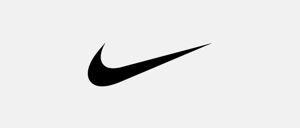
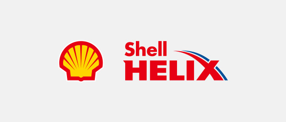
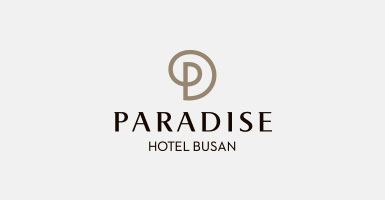
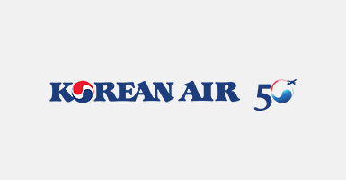
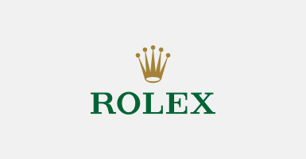
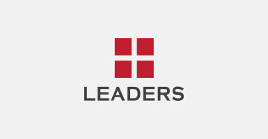
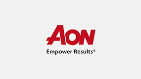
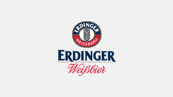

파트너
BMW 레이디스 챔피언십에 함께하는 공식 파트너를 소개합니다.
파트너
BMW 레이디스 챔피언십에 함께하는 공식 파트너를 소개합니다.
- Main Partners
-

Nike
미국 오리건주 비버튼에 본사를 두고 있는 나이키는 다양한 스포츠와 피트니스 활동과 관련된 운동화 및 의류, 장비, 액세서리 분야에서 전 세계를 이끄는 디자인과 마케팅, 그리고 유통을 하고 있다. 나이키가 보유한 자회사 브랜드로는 컨버스와 헐리가 있다. 컨버스는 라이프스타일 운동화와 의류 그리고 액세서리를, 헐리는 서핑 및 젊은 세대들을 위한 라이프스타일 신발 및 의류, 액세서리의 디자인과 마케팅, 유통을 진행하고 있다. 나이키의 최신 소식은 http://news.nike.com을 방문하거나, @Nike를 팔로우하면 확인할 수 있다.

Shell
로얄 더치 쉘(Royal Dutch Shell plc)은 영국과 웨일즈에서 설립되어, 네덜란드 헤이그의 본사를 두고, 런던, 암스테르담 및 뉴욕 증권 거래소에 상장되어 있는 세계 에너지 선도 기업이다. 로얄 더치 쉘은 70개 이상 국가 및 지역에서 석유·가스 탐사 및 생산, 천연가스·GTL(Gas to Liquids) 생산 및 마케팅, 석유·화학·신재생 에너지 상품 제조 및 운송 등 다양한 사업을 운영하고 있다. 로얄 더치 쉘에 대한 자세한 내용은 www.shell.com에서 확인할 수 있다.
1960년에 설립된 한국쉘석유주식회사는 세계적인 에너지 기업인 로얄더취쉘그룹 (Royal Dutch Shell Group)의 계열 회사로서 자동차용 엔진, 산업용 기계 및 선박용 엔진 등에 사용되는 우수한 품질의 다양한 윤활유와 그리스를 생산하여 판매하고 있다. 쉘은 2017년까지 12년 연속으로 세계 윤활유 판매부문에서 1위를 기록함으로써(Kline 자료) 최고의 윤활유로 인정 받고 있다.
페퍼저축은행
페퍼저축은행은 서민과 소상공인들에게 금융 서비스를 제공하는 저축은행이다. 2013년 1,900억 원의 자산 규모로 영업을 개시한 페퍼저축은행은 2021년 6월 기준 자산규모 약 5.1조원을 달성하며 업권 Top 5 저축은행으로 성장했다.
페퍼저축은행은 중금리신용대출을 기반으로 주택담보대출과 자동차 담보대출, 기업금융 등 다양한 상품을 통해 고객에게 차별화된 금융서비스를 제공하고 있다. 또한, 체계화된 신용평가모델을 선도적으로 도입해 대출 신청 고객을 효율적으로 평가하고 안정적으로 자산을 쌓을 수 있도록 시스템을 구축했다. 이를 바탕으로 입출금통장, 적금, 정기예금 등 다양한 수신 상품 라인업을 구성해 고객에게 제공하고 있다.
- corporate partners
-

PARADISE HOTEL BUSAN
하늘과 바다가 만나는 곳에 파라다이스호텔 부산이 있습니다.
천혜의 풍광을 자랑하는 해운대 해변에 위치한 파라다이스호텔 부산은 총 532 객실을 갖춘 부산 최고의 5성급(특1급) 호텔입니다. 세련되고 아늑한 룸, 하이엔드급 야외 오션스파와 수영장, 푸드 데스티네이션으로 각광을 받고 있는 총 9개의 레스토랑 등이 각기 다른 목적으로 호텔을 찾은 다양한 고객들을 만족시킵니다. 또한 계절의 흐름에 따라 다채로운 매력을 발산하며 여행객들이라면 반드시 들려야 할 잇 플레이스(It Place)로 각광받고 있습니다. 파라다이스호텔 부산은 부산 5성급 호텔 중 해운대 바다를 한 눈에 내려다 볼 수 있는 발코니 시설을 갖추고 있습니다. 고객들을 배려한 파라다이스만의 시설로 객실에서 발코니로 나가 해운대 바다 바람과 파도소리를 마음껏 감상할 수 있는 특별한 시설 때문에 서울 등 외부지역에서 찾는 관광객들은 물론 비즈니스 고객들에게도 늘 선호하는 호텔로 기억되고 있습니다. 곳곳에 비치 된 예술품과 조각품, 드넓은 조경 공간에서도 파라다이스만의 차별화 된 이미지를 느낄 수 있습니다. 국내 저명 작가 뿐만 아니라 세계적인 예술가인 데이비드 호크니(David Hockney), 알렉스 카츠(Alex Katz), 앤디 워홀(Andy Warhol) 등의 걸작 들이 호텔 곳곳을 채우고 있으며, 호텔 주변 가든에는 아름드리 수목과 함께 해변 산책길을 따라 이색적인 조각품을 비치해 도시 외곽의 한적한 갤러리에서 느끼는 고급스런 편안함을 전해드립니다.
대한항공
대한항공은 세계 항공업계를 선도하는 글로벌 항공사로서 2021년 8월 기준 157대의 항공기를 보유하고 있으며, 국내 13개 도시를 포함하여 전세계 43개국 120개 도시에 취항하고 있습니다. 대한항공은 '엑셀런스 인 플라이트(Excellence In Flight)'라는 슬로건 아래 고객 여러분께 전 세계의 어떤 항공사보다도 더 안전하고 격조 높은 서비스를 제공하기 위해 노력해 왔습니다. 무엇과도 바꿀 수 없는 핵심 가치인 '안전'과 '고객중심서비스'를 등대삼아, 앞으로도 고객 여러분들이 선택한 대한항공이 세계 항공업계를 주도하는 글로벌 선도 항공사로 자리매김할 수 있도록 최선의 노력을 다 하겠습니다.

Rolex
품질과 전문성에 대한 타의 추종을 불허하는 평판
롤렉스는 독립적인 통합 생산 시스템을 갖춘 스위스 시계 매뉴팩쳐이다. 스위스 제네바에 본사를 둔 롤렉스는 전문기술과 품질, 탁월함과 우아함 및 품격의 상징으로 세계적인 인정을 받고 있다. 오이스터 퍼페츄얼(Oyster Perpetual)과 첼리니(Cellini) 시계의 무브먼트는 스위스 공식 크로노미터 인증 기관(COSC)의 인증을 받은 후에도 정밀도, 성능, 신뢰도를 더 높이기 위해 자체 테스트를 거친다. 그린 씰로 상징되는 최상급 크로노미터 인증은 각 롤렉스 시계가 롤렉스만의 기준에 따라 자체 연구실에서 이뤄지는 점검 과정을 성공적으로 거쳤음을 증명한다. 이 기준은 독립적인 외부 기관에 의해 정기적으로 검증을 받는다.
모든 롤렉스 오이스터 시계에는 ‘Perpetual’이라는 단어가 새겨져 있다. 이 표시는 기술을 지칭하는 단순한 단어를 넘어 롤렉스의 비전과 가치를 품은 철학을 표현하고 있다. 롤렉스의 창립자 한스 빌스도르프(Hans Wilsdorf)는 ‘변함없는 탁월함’의 정신을 브랜드의 원동력으로 삼았다. 이 정신을 바탕으로 롤렉스는 현대 손목시계 발전의 선구자로 자리매김 하였으며 수많은 혁신 기술을 개발할 수 있었다. 그 중 대표적인 것이 1926년에 탄생한 세계 최초의 방수 손목시계인 오이스터와 1931년에 발명한 퍼페츄얼(Perpetual) 로터를 사용한 오토매틱 와인딩 무브먼트이다. 롤렉스는 창립 이래 500건 이상의 특허를 획득했다. 롤렉스는 스위스에 위치한 4곳의 매뉴팩쳐에서 자사 시계의 부품을 대부분 자체 제작한다. 골드 합금 주조에서 무브먼트, 케이스, 다이얼, 브레슬릿과 같은 부품의 생산, 가공, 조립, 마감에 이르기까지 전 공정을 독자적으로 수행하고 있다. 또한 예술, 문화, 스포츠 및 탐험 분야를 적극 후원하고 있으며, 자연 환경 보존을 위해 힘쓰는 이들도 후원하고 있다.
- supplier partners
-

Leaders
서울대 출신의 리더스 피부과 전문의들이 모여 만든 리더스코스메틱은 '피부만 봅니다'를 브랜드 슬로건으로 삼아 민감한 피부도 안심하고 사용할 수 있는 제품들을 선보이고 있습니다. 전 제품에 유해성분을 최소화하고, 피부 저자극 테스트를 실시하고 있으며, 자체 피부과학연구소의 우수한 기술력 바탕으로 세계 각국의 라이프 스타일을 고려한 현지 맞춤형제품을 선보이며 글로벌 더마코스메틱 브랜드로써 활약하고 있습니다.

AON
AON은 모든 사업영역에 대한 위험관리, 퇴직연금, 복리후생 컨설팅 등 전문적인 서비스를 제공하는 세계 일류 기업입니다. 120개 국가에 있는 50,000명의 분야별 최고 전문가들은 독점적인 데이터와 분석 기술을 사용하여, 변동성을 줄이고 성과를 향상시키는 서비스를 제공하고 있습니다. AON은 LPGA의 공식 전문 서비스 기업으로서, LPGA와 새롭고 장기적인 골프 파트너십을 맺은 것을 자랑스럽게 생각합니다. AON Risk Challenge는 LPGA 뿐만 아니라 PGA 정규 시즌까지 포함하여 매 대회 가장 도전적인 홀을 전략적으로 공략하는 세계 최고의 프로 골퍼들을 집중 조명할 것입니다. 각 투어의 우승자는 각각 100만 달러에 달하는 상금을 받게 됩니다.

Evian
에비앙 천연 샘물은 세계에서 가장 독특한 지질학적 특징을 갖는 프랑스 알프스의 중심부에서 형성됩니다. 이렇게 생성된 에비앙 샘물은 15년이 넘는 시간동안 바위들을 통과하며 필수적인 미네랄로 채워집니다. 에비앙은 천연 샘물의 뛰어난 품질을 후대에도 유지하기 위해, 지난 25년 이상 수원 주변의 자연 환경을 보호하며 노력해 왔습니다. 자연적으로 순수하고 독특하게 균형 잡힌 에비앙 천연 샘물은 항상 건강에 좋은 선택일 것입니다. One Planet, One Health 비전은 사람들의 건강과 지구의 건강이 상호 연결되어 있다는 의미로, Danone 브랜드인 에비앙은 이 비전을 수용하여 두 가지 모두를 보호하고 영양을 공급하는 방안을 모색해 나갈 것입니다.

Erdinger
1886년 뮌헨 에딩 마을에서 가업으로 시작한 에딩거(Erdinger)는 130여 년이 지난 오늘날 세계적으로 사랑받는 '독일 정통 밀맥주'로 자리매김했습니다. 그 비결은 독일의 전통 양조 방식을 지켜온 데에 있습니다. 바이에른 양조 기술과 최상급 효모의 결합으로 탄생한 에딩거는 물과 홉, 효모, 맥아 외에는 어떠한 첨가물도 넣지 않는 맥주 순수령을 따르고 있습니다. 무첨가 맥주로 생산 후 한 달간 병입 2차 발효로 살아있는 맥주의 신선함과 천연 탄산의 차별화된 맛을 냅니다.
에딩거 바이스브라우는 세계에서 가장 큰 밀 맥주 양조장이며, 전 세계 90여 개국에서 판매되는 맥주를 생산하고 있습니다. 모든 맥주는 독일 바이에른 맥주 순수령에 따라 물, 홉, 맥아, 효모 외에는 어떠한 첨가물 없이 제조되며, 그 과정에 있어 최상의 맛과 품질을 위해 타협 없는 완벽함을 고집합니다.
훌륭한 맥주는 꼭 필요한 만큼의 시간이 주어져야 합니다. 에딩거는 엄선된 재료와 엄격한 레시피에 따라 1차 발효를 마친 후, 추가로 약 한달 간의 병입 2차 발효를 고집합니다. 시간과 비용이 더 들더라도 최상의 맛을 낼 수 있도록 고수해 온 전통 방식은 오늘 날 독일 정통 밀맥주 에딩거의 명성을 뒷받침하고 있습니다.
TUMI
퍼포먼스 럭셔리 브랜드, 투미 (TUMI)
1975년 이래로, 투미(TUMI)는 일상을 더욱 완벽하고 아름답게 하는 독창적인 트래블, 비즈니스 및 라이프 스타일 컬렉션을 선보이고 있습니다.
약 75개국 이상, 2,000여 개 이상의 스토어에서 혁신적인 디자인의 투미 제품을 만나볼 수 있습니다.
Titleist
타이틀리스트는 PGA 투어를 비롯한 전 세계 투어에서 60% 이상의 압도적인 사용률을 기록하고 있는 넘버원 골프볼은 물론, 최고 퍼포먼스의 클럽, 골프 기어와 어패럴까지 제작, 판매하는 No.1 골프 브랜드입니다. 타이틀리스트는 스코어 향상을 위해 끊임없이 노력하는 열정적인 골퍼들에게 최고의 품질과 성능의 제품, 업계 최고의 서비스를 제공하는 것을 브랜드 미션으로 삼고 있습니다. 특히 타이틀리스트 골프볼은 1949년 U.S.오픈에서 골프볼 부문 사용률 1위에 오른 후 2021년(현재)까지 73년간 넘버원 골프볼의 자리를 지키며 명실공히 최고의 골프볼로 그 위상을 더해가고 있습니다.

씨젠의료재단
씨젠의료재단은 1990년 이후 30여년간 축적된 진단검사의학 기반의 인프라를 통해 전국 병·의원을 대상으로 임상 진료 및 연구를 위한 4,000여 가지 진단검사 서비스를 제공하는 한국의 대표적인 글로벌 질병검사 전문의료기관입니다.
'정확한 질병 검사와 혁신적인 연구개발로 인류의 건강과 행복에 기여한다'는 미션 아래 의생명과학의 근원적인 가치 기준을 바탕으로 최첨단 자동화시스템을 기반으로한 분자진단검사센터, 진단검사의학센터, 진단면역검사센터, 병리센터, 질량분석연구소, 면역연구소 등을 운영하고 있습니다.
특히 전문의, 석·박사, 임상병리사 등으로 구성된 전문인력과 대형 자동화 장비, 고난이도 이화학 분석 장비 등을 두루 갖춰 질병의 조기 진단 및 치료에 이바지하고 있습니다. 또한 서울 본원과 더불어 부산경남검사센터, 대구경북검사센터, 광주호남검사센터 등의 지역랩을 운영 중으로 특히 서울을 포함한 모든 지역랩에 RT-PCR 자동화 검사시스템을 통한 국내 최대의 COVID-19 검사 역량을 갖추고 있어 명실상부 K-방역 대표 검사 기관으로 입지를 강화했습니다.
아울러 지난 2019년 카자흐스탄 알마티에 오픈한 'Seegene Korean Clinical Laboratories(SKL 검사센터)'는 현지 민간의료기관 최초로 WHO기준 시설인가를 받고, 분자진단 및 진단검사를 실시하며 카자흐스탄 정부로부터 COVID-19 검사기관으로 정식승인을 받아 글로벌 질병검사 전문의료기관이자 의료 한류 선도 기관으로 명성을 높이고 있습니다.
인제대학교해운대백병원
2010년 개원하여 동부산권 유일의 대학병원으로서 부산 · 울산 · 경남지역 최고의 의료기관으로 자리매김하였습니다. 특히 개원 초기부터 러시아, 중국, 몽골 등 해외환자 유치를 위한 적극적인 마케팅 활동과 부산 ‘해운대’라는 천혜의 관광자원을 연계하여 지역 의료관광의 중심적인 역할을 하고 있습니다.
특히 진료과별 우수한 의료진이 협진체계를 바탕으로 로봇수술센터, 암센터, 척추센터, 뇌전증센터 등질환별 전문치료센터를 운영하고 있으며, 로봇수술기 ‘다빈치 Xi’를 비롯하여 방사선 수술장비 ‘감마나이프 Icon’, 방사선 치료장비 ‘트루빔’ 등 최첨단의 진단 및 치료 장비와 최고의 치료 환경을 바탕으로 지역을 넘어 세계적인 의료기관으로 나아가고 있습니다.
-
Host City

Busan City
한반도의 동남권 끝자락에 위치한 부산은 340만 시민이 거주하는 역동적인 도시이다. 부산의 총 면적은 770.07 km²로, 한반도 전체 면적의 0.8%를 차지한다. 산과 강, 바다가 조화를 이루는 자연환경을 지니고 있으며, 도시 내 아름다운 해변과 풍광이 멋진 암벽, 산으로 이루어진 해안선이 펼쳐져 있다. 이러한 지리적 특색 덕분에 도시 곳곳에서 등산과 멋진 풍경, 온천을 즐길 수 있다. 부산은 뚜렷한 4계절과 너무 춥지도, 덥지도 않은 온난한 기후를 가지고 있다.
부산은 대한민국에서 두 번째로 큰 도시이다. 도시의 항만과 해양환경을 활용하여 국내 최대·세계 5위의 컨테이너 항만으로 성장했다. 부산은 천혜의 자연환경과 깊은 역사를 바탕으로 명성을 더해가며 세계적 수준의 문화·관광도시로 거듭났으며, 떠오르는 국제회의 중심지로 각광받고 있다.Host Venue

LPGA International Busan
대한민국 부산 기장군에 위치한 LPGA INTERNATIONAL BUSAN (ASIAD CC)은 2002년 아시안게임 골프 경기를 위해 조성되었다. 회원제 27홀 규모의 골프장으로 Pine, Valley, Lake 코스로 구성되어 있으며, 그동안 다수의 KLPGA 대회와 2019년 LPGA BMW Ladies Championship을 성공적으로 개최하였다. 자연친화적이고 다이내믹한 코스로 많은 골퍼들에게 사랑받고 있다. 최신 소식은 https://lpgabusan.com 을 방문하면 확인할 수 있다.